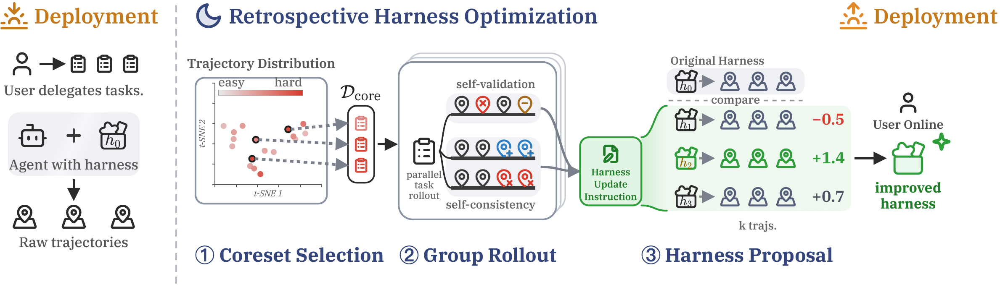

01研究背景与问题定义
智能体的执行日志里有很多可改进线索，但现实任务通常没有可反复调用的正确答案或验证标签。一次失败记录可能显露工具用错、环境误解和过早结束；问题是，谁来判断修改后的 harness 真的更好？只把历史压成笔记，未必修复可执行工具与流程本身；让模型随意重写整套系统，又容易把错误反思固化。
RHO 把无标签改进拆成三个选择：挑哪些历史任务值得复跑，同一任务的多条轨迹提供什么相对信号，以及多个候选 harness 中哪个值得替换旧版本。它改变的是指令、技能和可执行工具组成的外部工作目录，基础模型保持固定；“无需反馈”准确地说是不用验证真值，仍然使用环境观察和模型自偏好。
| 关口 | 直接做法的不足 | RHO 的处理 |
|---|---|---|
| 历史任务选择 | 全量优化昂贵，只挑最难又可能重复同类问题。 | 难度加权的 DPP 同时保留挑战性和差异。 |
| 改进信号 | 单条日志缺少相对参照，容易把偶然轨迹当规则。 | 同题并行轨迹对照自验证与自一致性。 |
| 候选接受 | 提出合理建议不代表实现以后更好。 | 候选复跑，再同旧轨迹成对比较；净偏好必须为正。 |
核心假设是：模型不必知道唯一标准答案，也能从观察与多次执行之间识别部分高价值行为差异。这个假设在可见错误上合理，在多次一致地犯错时则最需要谨慎。
02方法与技术路线
整个优化离线进行，最终得到可部署目录；未来任务不再携带全套回顾搜索。最重要的控制关系是候选必须经过实际执行比较，不能只让模型阅读补丁后宣布更优。
历史轨迹 → DPP 核心集
模型给出难度与失败模式描述；描述嵌入形成相似度核，选出 10 个困难且多样任务。
Self-validation
对照目标与环境观察，找错误调用、错误假设、过早结束。
Self-consistency
对照不同轨迹的计划、工具链和答案，找有后果的分歧。
Best-of-3 候选实现
分别修改指令、技能或脚本工具；每个候选重新执行核心集。
核心集：难度和覆盖怎样共同决定样本
语言模型先为每条历史轨迹打难度分，并描述具体挑战和潜在失败模式。描述向量之间的余弦相似度构成多样性矩阵，难度权重对矩阵两侧缩放；DPP 偏好既高难又不重复的子集。论文使用难度与多样性折中参数 0.7，核心集大小为 10。
这比把所有失败都堆给优化器更有针对性，但“难度”也是模型判断，并不是真值失败率。描述和嵌入若把关键差异抹平，核心集便可能漏掉低频但致命的环境故障。DPP 提供的是相对于当前表示的覆盖，不能保证覆盖所有未来失效模式。
组内对照：相对行为为什么比单次反思更有信息
每个核心任务并行执行三次。Self-validation 逐条检查是否有效达成目标，尤其关注观察与行为不一致；Self-consistency 比较多条执行的分歧，把不确定的决策暴露出来。两个维度形成改进建议，再跨任务合并。
自一致性本身不是正确性：三条轨迹都沿着同一个错误假设行动时，分歧消失了，错误仍在。因此它应被理解为诊断信号，而非多数投票真值。模型还要读取环境证据识别工具返回与自述是否匹配，这部分比“写得更一致”更接近可检查的可靠性。
候选复跑与提交：把自然语言经验落到工具和程序
建议交给三个并行优化调用，生成不同目录版本，允许增加脚本、技能和指令。每个目录重新跑相同核心任务，再把新轨迹与原 harness 的旧轨迹做成对比较。逐任务相对偏好求平均，选择最高且严格大于零者。
这个门槛能阻止模型无条件接受自己的新作品，但不能替代独立验证器。改进可能来自程序化修复重复环境问题，也可能来自更长工作时间或更大输出。最终 held-out 测试用于判断收益能否越过核心集，不能反过来参与候选选择。
论文原始结构图 · 点击对照

03实验设计与结果分析
无验证标签的改进能否越过核心集
固定 GPT-5.5 high 的 Codex 基础代理，核心集 10，组轨迹与候选各 3。表为独立 held-out 通过率。
| 基准 | 原 Codex | RHO | 绝对变化 |
|---|---|---|---|
| SWE-Bench Pro | 0.59 | 0.78 | +19 pp |
| Terminal-Bench 2 | 0.71 | 0.76 | +5 pp |
| GAIA-2 | 0.29 | 0.37 | +8 pp |
三种任务均提高，说明回顾式选择没有只修复核心集中的单个实例。最大改善出现在软件工程，和工具链定位、构建验证、补丁卫生等可复用脚本修复相吻合；这支持允许修改工具的系统价值，尚不能证明自偏好独立优于所有其他信号。
论文还观察到工作时长和行为比例变化，所以更好的流程与更多执行努力可能共同产生收益。若没有把任务运行成本对齐，就不能把分数改善完全解释成单位预算下推理更聪明。
不使用标签的优势要用什么成本衡量
SWE-Bench Pro，同一 held-out 划分；agent calls 为优化阶段，不是全部执行 token 或货币成本。
| 优化器 | 需要验证标签 | 优化调用数 | 通过率 |
|---|---|---|---|
| RHO | 否 | 103 | 0.78 |
| Meta-Harness，一轮 | 是 | 41 | 0.62 |
| Meta-Harness，十轮 | 是 | 320 | 0.80 |
RHO 在这组工作点以更少于十轮标签搜索的调用取得接近的通过率。单轮 Meta-Harness 只有 0.4 倍调用，不能称为完全等预算实验；十轮则约 3.1 倍，因此最稳妥的结论是展示了无需真值时有竞争力的效果—调用折中。
调用数也没有覆盖单次输入长度、并行时延和新工具运行代价。自偏好是否更省钱，仍需完整账本而非仅比较调用总数。
04贡献、局限与综合评价
核心贡献：可执行经验也能来自无标签的相对证据
RHO 将难度覆盖、组内行为差异和候选复跑组合成外部系统优化。持久产物不是又一段回忆，而是能改变任务执行的目录与工具。跨三个 held-out 基准的提升支持这一改进层级，尤其说明过去轨迹包含可程序化利用的环境知识。
自偏好的误差可能跨越三个关口
难度、诊断和候选优劣都由模型判断，错误可能在关口间相关传播：先认为某类任务重要，再提出符合这一叙事的修改，最后偏爱表现得更符合叙事的轨迹。严格正偏好门槛只阻挡低自评分，不阻挡一致高自评的错误。
最有区分力的检验，是在不向优化器暴露标签的前提下，事后测量自偏好排序与独立验证排序的一致性，并按可见工具错误、隐藏语义错误分层。若前者一致、后者失配，便能准确限定该方法在环境可观察度高的任务上更可靠。
综合看，RHO 证明了无标签轨迹并非只能被压缩保存，也能用于提出和筛选真正的 harness 修改。它的强项是把相对行为证据落到可执行修复；开放语义正确性和自评相关误差仍决定了它能走多远。